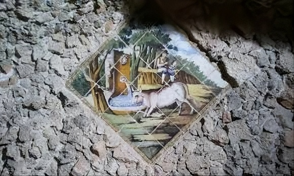

Non solo date e nomi, ma storie che prendono vita.
Completano l'offerta i nostri incontri con storici locali ed esperti del territorio. Queste visite guidate sono pensate per chi vuole approfondire gli aspetti meno noti del culto luciano e dell'architettura sacra di Erchie.
Un percorso fatto di racconti orali, documenti storici e curiosità che non troveresti mai in una normale guida turistica.
Tutte le esperienze
Accesso a fonti originali e riproduzioni di atti, registri parrocchiali e mappe antiche.
Storie tramandate di generazione in generazione, raccolte dagli anziani del borgo.
Un focus sull'architettura della chiesa madre e dei luoghi di culto minori di Erchie.